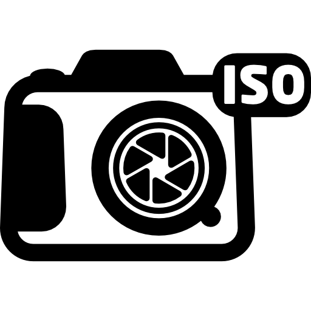

ISO: is the level of sensitivity of camera to available light. 
The full name of ISO is "International Standard Organization"
The lower ISO number(ISO 100), the less sensitive it is to the light, while a higher ISO number(ISO 1600) increases the sensitivity of camera.
When you take the picture at the dark spot, if you set the high ISO number such as ISO 1600, you can take the bright picture.
However, higher ISO can have a lot more noise than lower ISO.
Also, if when the ISO number is 100, it takes 1 second. If ISO number is 200, it takes 1/2 of a second.
ISO 400 is 1/8 of a second, ISO 800 is 1/8 of a second, ISO 1600 is 1/15 of a second, and ISO 3200 is 1/30 of a second.
So, when you choose the lower number of ISO, it takes longer time than higher number of ISO, there is a high probability that the picture will be shaken.